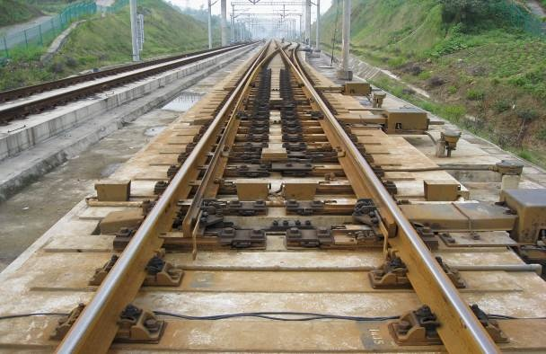
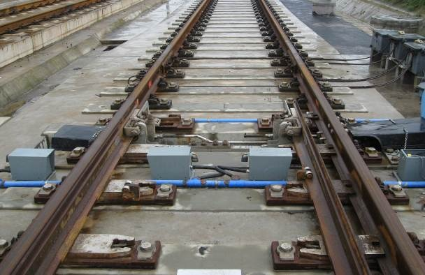
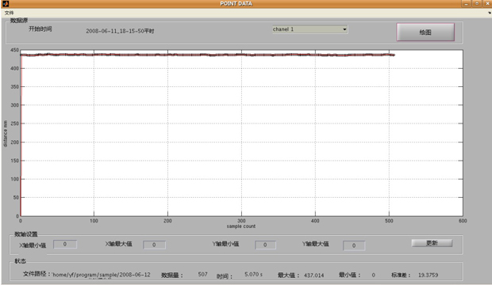
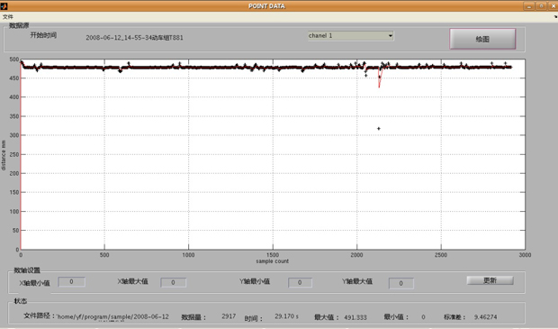
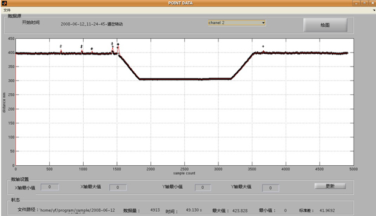
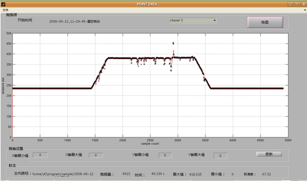

高速道岔工务参数监测系统
-
高速道岔工务参数监测系统介绍
道岔是轨道结构中最薄弱的部分，是影响行车安全和限制车速的一个主要因素。随着我国铁路运输向高速、重载、大密度方向发展，对道岔系统的要求也越来越苛刻，道岔的使用情况也应有相应的检测手段。虽然道岔的复杂程度增加了，但道岔的检测和维护方式依然是靠人工定期巡检，势必占用较多的运营时间。针对这一情况，目前国内的相关部门着手了道岔监测系统的研制，但监测对象多为电务参数，缺少对工务参数的关注，如轨距、轨枕加速度、尖轨密贴、轨排位移等，尤其尖轨的密贴与否直接关系到行车安全。
我们针对国内到道岔监测的现状，研究了工务参数检测的方法和手段，研制了高速道岔工务参数的监测系统，较好地解决了道岔工务参数长期监测和定点检测问题。本项目可对尖轨密贴段密贴情况、轨距、轨排横移、钢轨加速度、轨枕加速度、尖轨尖端纵向位移、钢轨温度应力、钢轨竖向位移等多项工务参数进行检测。本系统主要分为硬件部分和软件部分。硬件部分主要包括开发板和传感器、数据采集电路板、电源等。其中开发板和传感器的选型根据现场的实际情况选择，主要考虑稳定性高、抗震性好的硬件。数据采集电路的设计和制作要保证数据采集的准确度。软件部分的主要功能模块包括：驱动程序模块、数据采集模块、数据分析处理模块等功能模块。其中驱动程序模块主要完成各硬件驱动程序的开发和完善；数据采集主要完成数据的模拟信号的采集工作；数据分析处理模块主要将采集模拟信号转换成数字信号以便进行处理、对数据进行滤波的处理以去除噪声、绘制数据曲线、以及工务参数计算等。
-
高速道岔工务参数监测系统示例
系统实际现场安装、道岔转折动作、以及列车通过时的数据采集结果如下图。


高速道岔实验现场

无火车通过道岔时1号传感器

动车组通过道岔时1号传感器

道岔转动时2号传感器

道岔转动时3号传感器